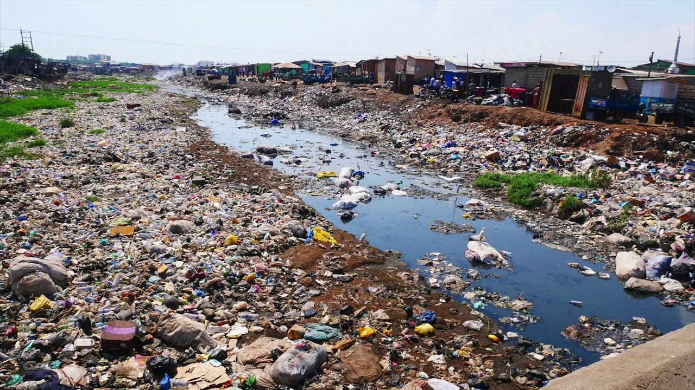
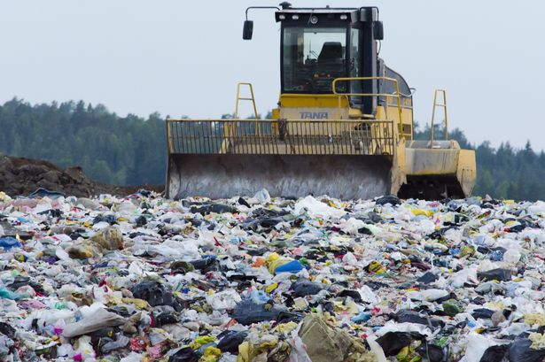
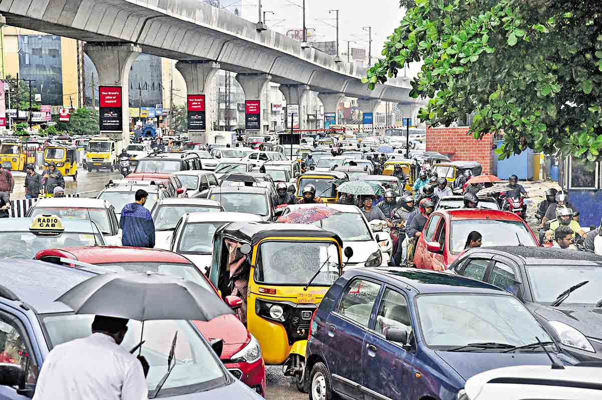
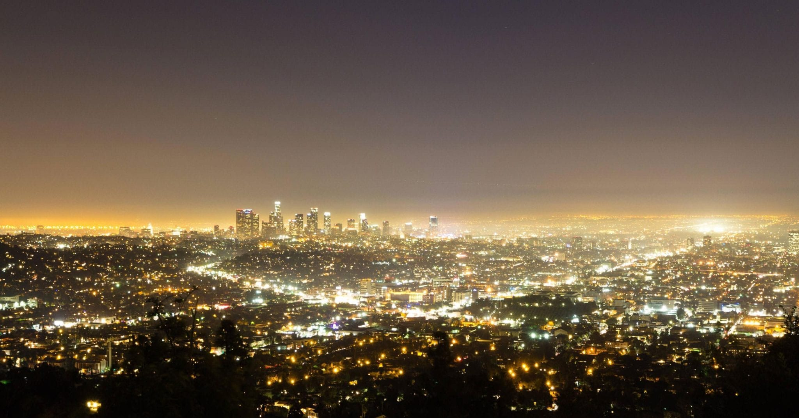
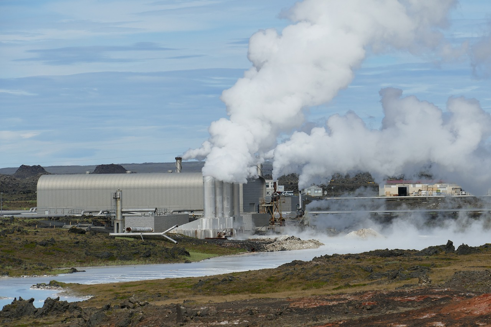

What Cause Pollution
When it comes to pollution, there isn’t just one cause. There are lots of them. However, before we can break down what causes pollution and the types of pollution, it’s important to look at what pollution is. In simple terms, pollution is the introduction of harmful chemicals into some areas of the environment. This could be the toxic gases released from the burning of fossil fuels, or it could be the ash created by a natural volcano eruption. As you can see, pollution can have natural causes or be caused by humans. Let’s explore the different types of pollution and what causes them.
The 7 Different Types of Pollution
When you think of environmental pollution, it typically comes in seven different types. These include air, water, land, radioactive, thermal, light, and sound pollution. Explore the definition and causes of each type of pollution.
Air Pollution
Taking steps to use less electricity, especially when it comes from burning coal or gas, can take a big dent out of greenhouse gas emissions. Worldwide, electricity use is responsible for a quarter of all emissions. Some steps that you can take to use less electricity are simple and save money - like replacing incandescent light bulbs with LED bulbs that use less electricity, adding insulation to your home, and setting the thermostat lower in the winter and higher in the summer, especially when no one is home. There are also new technologies that help keep buildings energy efficient, such as glass that reflects heat, low-flow water fixtures, smart thermostats, and new air conditioning technology with refrigerants that don’t cause warming. In urban and suburban environments, green or cool roofs can limit the amount of heat that gets into buildings during hot days and help decrease the urban heat island effect.

Water Pollution
Humans need water to survive. That is a fact. However, trash and chemicals can get thrown into the ocean and lakes. This is called water pollution. Not only can they affect fish and other marine life, when pollutants get into the water, they have a devastating effect on the water cycle. Natural causes of water pollution include algae blooms and volcanos. However, humans also cause water pollution through trash and wastewater from factories.
Land Pollution
Land pollution is another one of the big three pollution types affecting the human population. Land pollution happens when the soil gets contaminated by fertilizers or chemicals being dumped. The pollution in the land can seep into the ground water or run into lakes and streams creating a vicious pollution cycle.
Noise Pollution
Have you ever needed to wear earphones for loud noises? If so, you were experiencing noise pollution. Noise pollution is caused by loud noises that can hurt the human ears. Types of noise pollution can include explosions, jet engines, and even concerts (if you are close to the speakers). Noise pollution is dangerous because it can cause hearing loss.
Light Pollutions
Have you ever noticed that in a big city with a lot of lights, it is impossible to see the stars and galaxies? Light pollution, using electric lights to light up the sky, is the cause. While lights are great for helping us to see at night, too many lights cause light pollution blocking out the night sky. Light pollution can also be harmful to animals. For example, the lights of big cities can confuse migrating birds.
Thermal Pollution
While most pollution types are straightforward, thermal pollution is a bit tricky. Many times, nuclear power plants and factories use water to cool things. However, if they put that warmed up water back into the environment, it wreaks havoc on the fish and wildlife because it has less oxygen. This is called thermal pollution. Thermal pollution can be caused by natural forces too like soil erosion giving water more sunlight
Radioactive Pollution
When you think of radioactive pollution, you might think of Chernobyl or Fukushima. Both of these nuclear power plants used fission of radioactive materials, uranium and plutonium, to create electricity, and both failed. Their failure led to toxic chemicals and radiation being leaked out into the environment, which is radioactive pollution
